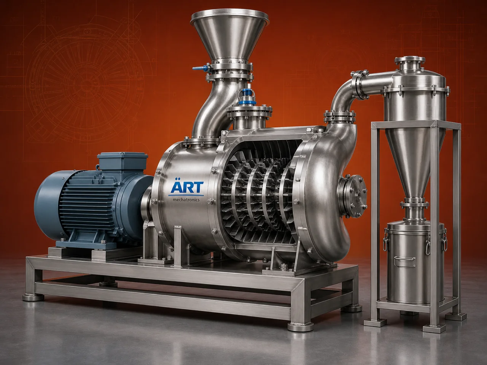

Powderizer Machine (Industrial Pulverizer & Powder Grinding System)
A Powderizer Machine, commonly known as a Pulverizer Machine or Powder Grinding Machine, is an industrial system designed to convert raw materials into fine powder form with high efficiency and uniform particle size.

About the Powderizer Machine
These machines are widely used in industries such as food processing, spices, pharmaceuticals, chemicals, agro products, minerals, and recycling, where materials need to be processed into fine, consistent powders.
Powderizers use advanced grinding mechanisms such as impact, attrition, and high-speed rotation to deliver precise, high-quality output with minimal wastage.
ART Mechatronics offers high-performance powderizer machines, engineered for efficient grinding, durability, and reliable industrial performance.
One machine, many names
Buyers search for this equipment under many terms — we manufacture all of them:
Working Principle of Powderizer Machine
Raw material is fed into the machine through:
Inside the machine:
Final powder is collected using:
Types of Powderizer Machines
Industries Using Powderizer Machines
🌶️ Food & Spice Industry
- Chili, turmeric, coriander
- Flour and food powders
💊 Pharma & Herbal Industry
- Medicines
- Herbal powders
⚗️ Chemical Industry
- Chemicals
- Pigments
🏗️ Mineral Processing
- Limestone
- Minerals
🌾 Agro Industry
- Feed
- Agricultural powders
♻️ Recycling Industry
- Powder materials
Features & Advantages
- High-efficiency powder production
- Uniform particle size output
- Suitable for wide range of materials
- High-speed and reliable operation
- Energy-efficient performance
- Durable and robust construction
- Easy maintenance
Technical Highlights
- Capacity: Custom (kg/hr to tons/hr)
- Grinding Type: Impact / Attrition
- Construction: Mild Steel / Stainless Steel
- Particle Size: Adjustable (fine to ultra-fine)
- Drive: Electric motor
- Dust Control: Cyclone + Dust Collector
Turnkey Powder Processing Solutions
ART Mechatronics offers:
- Complete powder processing system design
- Machine selection based on application
- Integration with dust control systems
- Installation & commissioning
- After-sales service & AMC
Why Choose Art Mechatronics
- Expertise in industrial powder processing systems
- Customized solutions for all industries
- High-performance and durable machines
- Efficient and reliable operation
- Proven performance across applications
Applications
- Food Processing Units
- Spice Processing Plants
- Pharma Manufacturing Units
- Chemical Processing Plants
- Mineral Grinding Units
Related Size Reduction & Grinding machines
Get pricing & specs for the Powderizer Machine
Share the product, target capacity, current process and plant location. These details help our engineers discuss the right machine or line configuration.
One partner, from design to start-up
ART Mechatronics designs, manufactures, installs and commissions your Powderizer Machine solution with regional presence in India, UAE and Thailand.